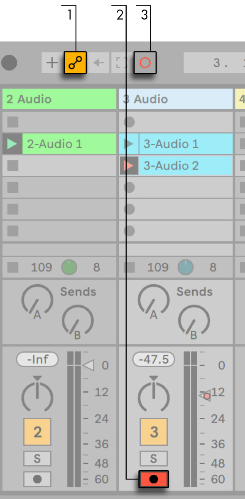
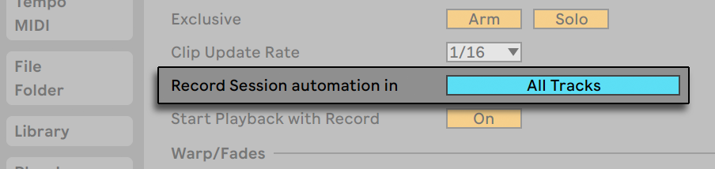
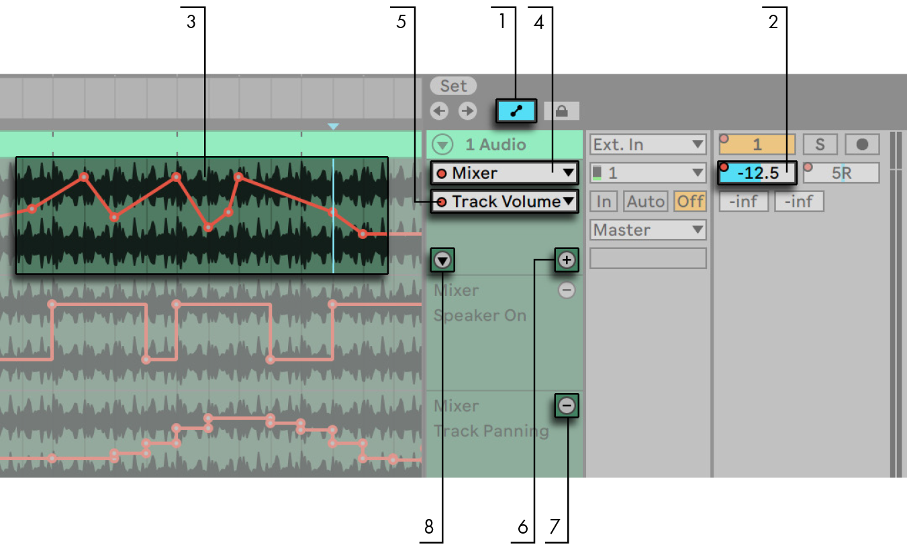
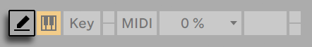
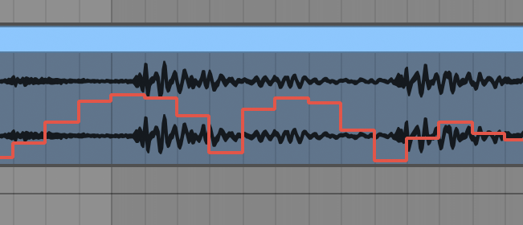
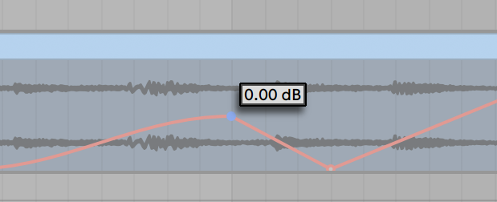
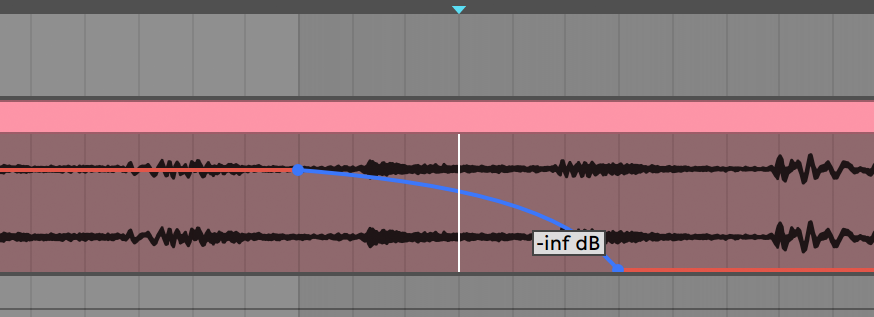
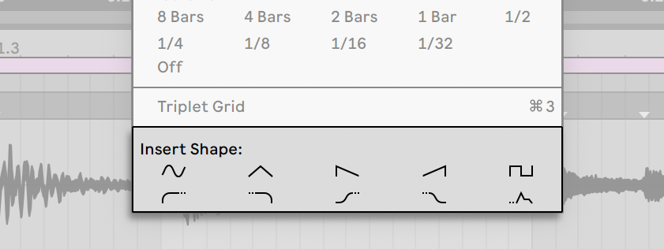
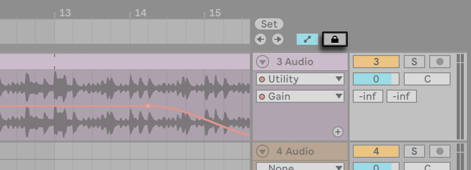

25. Automation and Editing Envelopes
Often, when working with Live’s mixer and devices, you will want the controls’ movements to become part of the music. The movement of a control across the song timeline or Session clip is called automation; a control whose value changes in the course of this timeline is automated. Practically all mixer and device controls in Live can be automated, including the song tempo.
25.1 Recording Automation in Arrangement View
Automation can be recorded to the Arrangement View in two ways:
- By manually changing parameters while recording new material directly into the Arrangement.
- By recording a Session View performance into the Arrangement, if the Session clips contain automation.
During Session-to-Arrangement recording, automation in Session clips is always recorded to the Arrangement, as are any manual changes to parameters in tracks that are being recorded from the Session.
When recording new material directly to the Arrangement, the Automation Arm button determines whether or not manual parameter changes will be recorded.

When Automation Arm is on, all changes of a control that occur while the Control Bar’s Arrangement Record button is on become Arrangement automation. Try recording automation for a control; for instance a mixer volume slider. After recording, play back what you have just recorded to see and hear the effect of the control movement. You will notice that a little LED has appeared in the slider thumb to indicate that the control is now automated. Try recording automation for track panning and the Track Activator switch as well; their automation LEDs appear in their upper left corners.

25.2 Recording Automation in Session View
Automation can also be recorded to Session View clips. Here is how it works:

- Enable the Automation Arm button to prepare for automation recording.
- Activate the Arm button for the tracks onto which you want to record. Clip Record buttons will appear in the empty slots of the armed tracks.
- Click the Session Record button to begin recording automation.
It is also possible to record automation into all playing Session clips, regardless of whether or not they are in armed tracks. This is done via the Session Automation Recording switch in the Record, Warp & Launch Settings.

This allows you to, for example, overdub Session automation into an existing MIDI clip without also recording notes into the clip.
Any automation in Session View becomes track-based automation when clips are recorded or copied into Arrangement View.
25.2.1 Session Automation Recording Modes
The automation recording behavior differs depending on how you adjust parameters while recording. When using the mouse, recording stops immediately when you let go of the mouse button. This is referred to in some editing applications as “touch” behavior. When adjusting parameters via knobs or faders on MIDI controllers, recording will continue as long as you adjust the controller. When you let go, recording will continue until the end of the clip’s loop and then will “punch out” automatically. This is known as “latch” behavior in some applications.
25.3 Deleting Automation
To delete all automation data, right-click on an automated control to open its context menu and select Delete Automation, or press the CtrlBackspace (Win) / CmdDelete (Mac) shortcut keys. The automation LED disappears, and the control’s value stays constant across the entire Arrangement timeline and in any Session View clips. You can also delete selected portions of automation by editing breakpoint envelopes.
25.4 Overriding Automation
In practice, you will often want to try out new control moves without overwriting existing automation data in the Arrangement. Well, nothing is forever in the world of infinite Undo, but it’s easy to disable a control’s automation temporarily to avoid overwriting existing data: If you change an automated control’s value while not recording, the automation LED goes off to indicate the control’s automation is inactive. Any automation is therefore overridden by the current manual setting.
When one or more of the automated controls in your Live Set are not active, the Control Bar’s Re-Enable Automation button lights up.

This button serves two purposes. It reminds you that the current state of the controls differs from the state captured in Session clips or the Arrangement, and you can click on it to reactivate all automation and thereby return to the automation state as it is written “on tape.“
You can also re-enable automation for only one parameter via the Re-Enable Automation option in the context menu for that parameter. And in the Session View, you can re-enable overridden automation by simply relaunching a clip that contains automation.
25.5 Drawing and Editing Automation
In the Arrangement View and in Session View clips, automation can be viewed and edited as breakpoint envelopes.
Here is how automation editing works in the Arrangement:

- To show automation envelopes, enable Automation Mode by clicking the toggle button above the track headers, or using the A shortcut to the View menu item. Note that you can disable Automation Mode by pressing the toggle button or A shortcut key again.
- Clicking on a track’s mixer or device controls will display this control’s envelope on the clip track.
- Envelopes appear in the track’s main automation lane, “on top of“ the audio waveform or MIDI display. This is useful for lining up breakpoints with the track’s audio or MIDI content. An envelope’s vertical axis represents the control value and the horizontal axis represents time. For switches and radio buttons, the value axis is “discrete”, meaning that it operates with non-continuous values (e.g., on/off).
- The Device chooser either selects the track mixer, one of the track’s devices, or “None“ to hide the envelope. It also provides you with an overview of which devices actually have automation by showing an LED next to their labels. You can make things clearer still by selecting “Show Automated Parameters Only“ from the bottom of the chooser.
- The Automation Control chooser selects a control from the device chosen in the Device chooser. The labels of automated controls have an LED.
- The
 button moves the envelope into its own automation lane below the clip. You can then select another automation parameter from the choosers to view it simultaneously. Holding Alt (Win) / Cmd (Mac) while pressing the button moves the selected envelope, as well as all automated envelopes, into their own automation lane(s) below the clip. If the Device chooser is set to “None“, this button will be hidden.
button moves the envelope into its own automation lane below the clip. You can then select another automation parameter from the choosers to view it simultaneously. Holding Alt (Win) / Cmd (Mac) while pressing the button moves the selected envelope, as well as all automated envelopes, into their own automation lane(s) below the clip. If the Device chooser is set to “None“, this button will be hidden. - The
 button hides its respective automation lane. Note that hiding a lane from view does not deactivate its envelope. Holding Alt (Win) / Cmd (Mac) while clicking the button removes the selected automation lane, as well as any subsequent automation lanes in that track.
button hides its respective automation lane. Note that hiding a lane from view does not deactivate its envelope. Holding Alt (Win) / Cmd (Mac) while clicking the button removes the selected automation lane, as well as any subsequent automation lanes in that track. - The
 toggle appears when an envelope is moved into its own automation lane. This toggle lets you show or hide all additional automation lanes.
toggle appears when an envelope is moved into its own automation lane. This toggle lets you show or hide all additional automation lanes.
Right-clicking on an automation lane header opens a context menu with additional options for viewing envelopes. This context menu also contains commands to quickly clear all automation envelopes for the track or any of its devices.
You can use the left arrow key to navigate from an automation lane to the main track, this will fold all automation lanes as well. Using the left and right arrow keys on a main track will fold/unfold its automation lanes.
Automation editing for Session View clips is covered in detail in the Clip Envelopes chapter.
25.5.1 Drawing Envelopes
With Draw Mode enabled, you can click and drag to “draw“ an envelope curve.

To toggle Draw Mode, select the Draw Mode option from the Options menu, click on the Control Bar’s Draw Mode switch, or press B. Holding B while editing with the mouse temporarily toggles Draw Mode.

Drawing creates steps as wide as the visible grid, which you can modify using a number of handy shortcuts. Holding down the Shift modifier while dragging vertically allows you to adjust the automation value of a step at a finer resolution.
For freehand drawing, you can hide the grid using the Snap to Grid Options menu entry or the Ctrl4 (Win) / Cmd4 (Mac) shortcut. To temporarily enable freehand drawing while the grid is shown, hold down Alt (Win) / Cmd (Mac) while drawing.
25.5.2 Editing Breakpoints
With Draw Mode off, the envelope display looks and works differently. The line segments and the breakpoints connecting them become draggable objects. Clicking and dragging in the envelope’s background defines a selection. Here’s how editing breakpoints works:
- Click at a position on a line segment to create a new breakpoint there.
- Double-click anywhere in the envelope display that is not on a line segment, to create a new breakpoint there.
- Click on a breakpoint to delete it.
- To help you edit breakpoints more quickly, automation values are shown when you create, hover over, or drag a breakpoint. Note that when hovering over or dragging a selected line segment, the automation value shown will correspond to the breakpoint closest to the cursor.

- Click and drag a breakpoint to move it to the desired location. If the breakpoint you are dragging is in the current selection, all other breakpoints in the selection will follow the movement. When dragging a breakpoint, a thin black vertical line will appear to help you see where your breakpoint is positioned in relation to the grid lines.
- Right-click on a breakpoint and choose Edit Value from the context menu. This allows you to set an exact value in the editable field using your computer keyboard. If multiple breakpoints are selected, they will all be moved relatively. Similarly, you can also create new breakpoints at an exact value by right-clicking on a preview breakpoint and choosing the Add Value command.
- Click near (but not on) a line segment or hold Shift and click directly on a line segment to select it. With the left mouse button held down, drag to move the line segment to the desired location. If the line segment you are dragging is in the current time selection, Live will insert breakpoints at the selection’s edges and the entire segment will move together.

- Breakpoints created close to a grid line will automatically snap to that line. Hold down the Alt (Win) / Cmd (Mac) modifier while dragging horizontally to bypass grid snapping.
- Breakpoints and line segments will snap to time positions where neighboring breakpoints exist. You can remove a neighboring breakpoint by continuing to drag a breakpoint or line segment “over” it horizontally.
- When moving a line segment or breakpoint, hold Shift while dragging to restrict movement to either the horizontal or vertical axis.
- Holding down the Shift modifier while dragging vertically allows you to adjust the breakpoint or line segment value at a finer resolution.
- Hold Alt (Win) / Option (Mac) and drag a line segment to curve the segment. Double-click while holding Alt (Win) / Option (Mac) to return the segment to a straight line.

25.5.3 Stretching and Skewing Envelopes
When hovering over a time selection, handles appear around the outer edges of the selection. Clicking and dragging these handles allows you to transform the selected automation in the following ways:
- Dragging the top and bottom center handles lets you stretch the automation along the vertical axis. While dragging, a rectangle indicates the amount of stretching. The rectangle will snap to upper and lower boundaries and when its corners intersect. Holding Shift allows you to finely adjust the amount of stretching. Dragging beyond the boundaries will clip the envelope.
- Dragging the left and right center handles lets you stretch the automation along the horizontal axis. Dragging over existing breakpoints outside the time selection will remove them. If you hold Shift while stretching, these breakpoints will be moved in proportion to the movement of the handle. Hold down the Alt (Win) / Cmd (Mac) modifier while dragging horizontally to bypass grid snapping.
- Dragging any of the corner handles lets you skew the automation. While dragging, a rectangle indicates the degree of skewing. The rectangle will snap to upper and lower boundaries and when its corners intersect. Holding Shift allows you to finely adjust the amount of skewing.
- Dragging a handle while holding Alt (Win) / Option (Mac) will mirror the movement in the opposite handle, as if you were dragging them both simultaneously in opposite directions.
25.5.4 Simplifying Envelopes
If your automation envelope has a lot of breakpoints, e.g., after recording automation, the Simplify Envelope command can be quite useful. Simplify Envelope calculates the optimal number of breakpoints needed to represent the selected automation envelope, and removes any unnecessary breakpoints, replacing them with straight lines or curved segments where appropriate.

Make a time selection on the automation you wish to simplify, and choose Simplify Envelope from the context menu.
25.5.5 Inserting Automation Shapes

Automation shapes can help you quickly create complex rhythmic automation patterns, as well as more subtle, slow-paced movements like swells, builds and drops.
There are several predefined automation shapes that you can apply to a time selection. To insert an automation shape, right-click on a time selection and choose a shape from the context menu.

There are two types of automation shapes. In the top row of available shapes, you’ll find several common waveforms: sine, triangle, sawtooth, inverse sawtooth and square. When inserted, these shapes will be scaled horizontally to the time selection and vertically to the automated parameter range. If there is no time selection, the shapes will be scaled horizontally to the current grid size.
In the bottom row of available shapes are two sets of ramps, and an ADSR shape. These shapes behave slightly differently than those on the top row. When inserted, they will link up to the value of the automation before or after the selection, as indicated by their dotted line.
25.5.6 Locking Envelopes
When moving Arrangement View clips, Live normally moves all automation with the clip. Sometimes, you might want to lock the envelopes to the song position rather than to the clips, and the Lock Envelopes switch does just that.
You can also choose to lock envelopes from the Options menu.

25.5.7 Edit Menu Commands
When working with automation data in the Arrangement View, several Edit menu commands behave differently depending on whether or not your selection is within the clip track or its automation lanes.
Cut, Copy, Duplicate or Delete commands applied to an envelope selection within a single lane will only apply to this envelope. The clip itself and other automation that occurs in that time selection will be unaffected. You can also work with envelopes in multiple lanes simultaneously.
If you want your edits to apply to both the clip and all of its associated envelopes, ensure the Lock Envelopes switch is disabled and apply edit commands to a selection in the clip track.
Note that Live allows you to copy and paste envelope movements not only from one point in time to another, but also from one parameter to another. Since the parameters may be completely unrelated, this can have unexpected (but possibly interesting) results.
25.5.8 Editing the Tempo Automation
The ability to dynamically stretch and compress audio to track any tempo or tempo variation is one of Live’s specialties. In Live, the song tempo is just another automated control.
To edit the song tempo envelope, unfold the Main track in Arrangement View, choose “Mixer“ from the top envelope chooser and “Song Tempo“ from the bottom one.

When adjusting the tempo envelope, you might want to scale the value axis display, which is the function of the two value boxes below the envelope choosers: The left box sets the minimum, and the right box sets the maximum tempo displayed, in BPM.
Note that these two controls also determine the value range of a MIDI controller assigned to the tempo.